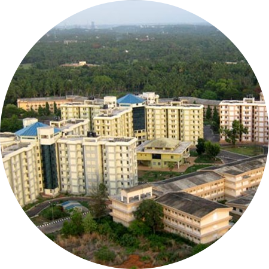
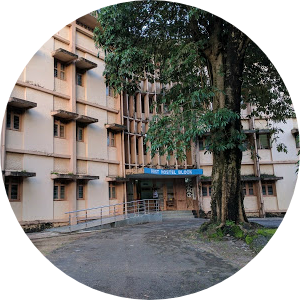
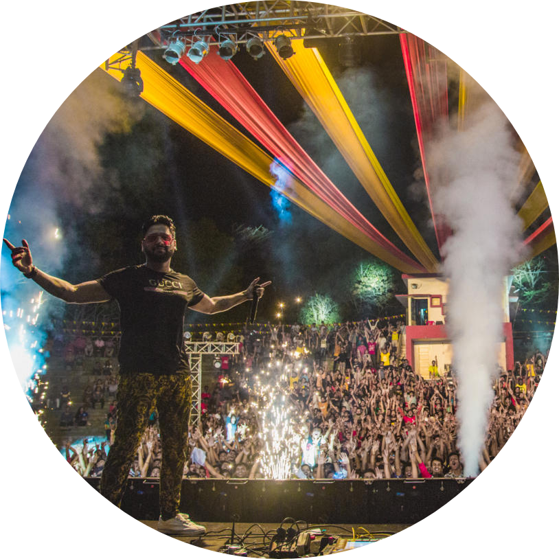

The CampusThe 295.35-acre campus caters to the needs of a comminity comprised of Faculty, Staff and Students. The campus is green and beautiful, you can see few peacocks running around. You will blend in the nature for sure! The following are the amenities provided to the resident in the campus:
Caption: This is the aerial view of the campus. |
 |
 |
The NITK BeachThe private beach is one of the main reason why this college is very looked out and familiar to most of the students! This is NITK beach where you can walk for 15 mins from your hostels and reach the gate! You can witness the beautiful sunsets and sunrise most of the time and click many photos and brag about it! You can jog, do yoga, cycle parallelly to the beach. Also never miss out the kite festival hosted every year. Caption: Image of the lighthouse and Surathkal beach. |
My second home: Karavali HostelKaravali hostel or it was a home away from home to me. Being in this hostel for many months, I didn't feel to leave it and go back home. The cherishing memories made in this building are unforgettable, the washrooms were cleaned regurlay, the mess food was good and also used to eat from night canteen! Caption: A glimpse of the Karavali AKA first block boys hostel. |  |
|  | The fests!Last but not the least, NITK students do conduct amazing shows and fests during the academic year just to release little pressure. We have two fests annually namely Engineer: A TechFest and Incident: Cultural Fest. Incident is held in March of every year and is a four-day-long fest with lots of events and shows!. Whereas Engineer has many budding engineers showcasing their skills for fun and welcomes other college students as well. Caption: This is an image of Incident fest held in 2019 at SAC. |